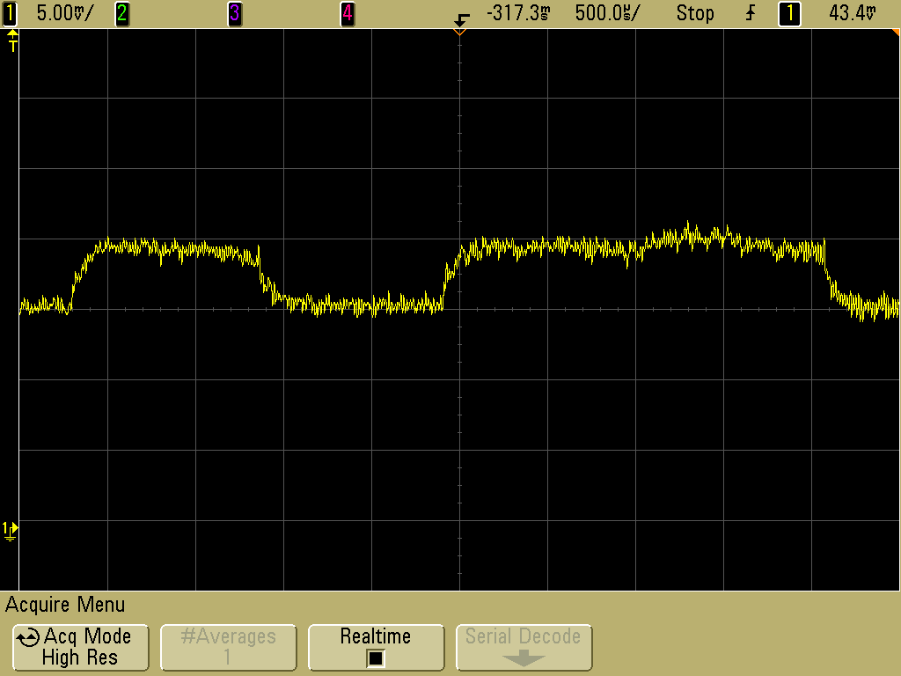

Power Analysis Introductory Walkthrough
IT Security has many fields and layers, all of which aim to investigate how to break and protect the core principles of information security. These principles are confidentiality, integrity and availability1. One of these fields is Side-Channel analysis. Here the focus lies on how technology interacts with the world around it, and what analysis those interacts can tell us about calculations or operations done by the technology.
One of the techniques within Side-Channel analysis which aims break confidentiality is Power analysis. Power analysis looks at the power consumption of hardware in order to make statements about the specific calculations done within a computer. Some calculations require a higher amount of power than other calculations.
Take a look at the following picture. If we know that the following Figure 1 records the a sequence of two different computations - namely, squaring and taking a product - and we also know that squaring takes marginally less time than taking a product in this case. You could hypothesize where the power trace is taking a product and where the trace is squaring a number.

Figure 1: Power Trace of a RSA encryption by Audriusa (GPFL)
{kind=link}
Purpose of this walkthrough
This walkthrough is meant to be an introduction into both power analysis and using the ChipWhisperer framework. It expects you to have some basic knowledge of Python and probably C. It also helps to be comfortable with a terminal and the shell. This walkthrough is not about programming or the shell, however, and most of what is discussed could be followed along with, even if you have very little programming experience. There is, however, a lot of pseudocode.
Furthermore, if you plan on doing your own traces, you will need a ChipWhisperer capturing board. This walkthrough will provide predefined data sets so you can do some of the analysis without doing the traces yourself. This could save you from buying a ChipWhisperer capturing board. It is, however, highly recommended to do some traces yourself. If you are looking at buying a ChipWhisperer capturing board and don't know what to use, this walkthrough is created using on the CW Lite ARM variant. It is a relatively cheap all-in-one solution.
ChipWhisperer
Normally, to make these power measurements on microprocesors, you need a lot of expensive equipment. Equipment such as multimeters, oscilloscopes, different microcontrollers, connectors, etc. This is where the ChipWhisperer comes in. The ChipWhisperer framework provides microcontrollers to test and run you algorithms on, which are referred to as targets. But also provides measurement devices, which when put together with a target is referred to as a scope. ChipWhisperer goes further than a playground and can be used in real world environments, which makes an ideal framework to learn power analysis with. Partially because scopes can also be connected to other unrelated microprocesors in order to do power measurements on those.